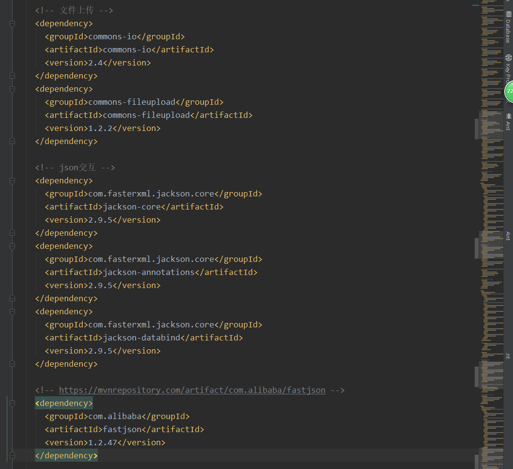
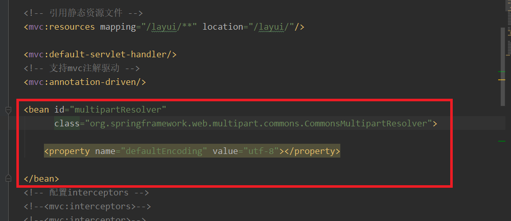
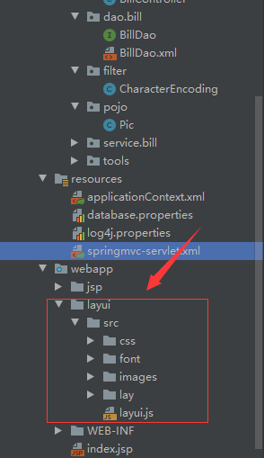
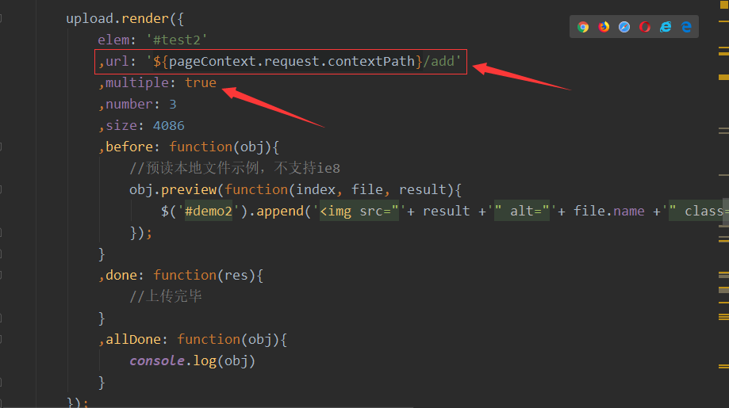
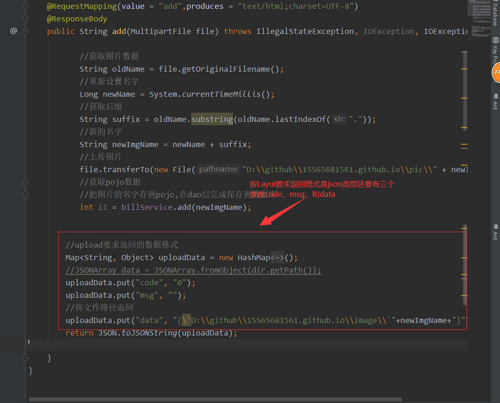

1、在pom文件中导入上传文件需要的jar包

2、在springmvc.xml中配置multipartResolver别忘了把静态资源放行

3、导入Layui文件

4、配置路径其中 multiple: true 表示可以多文件上传 默认false

5、在Controller中操作，返回类型为json格式，并且按Layui要求返回的数据中要有 code、msg和data data中存放照片上传的路径
